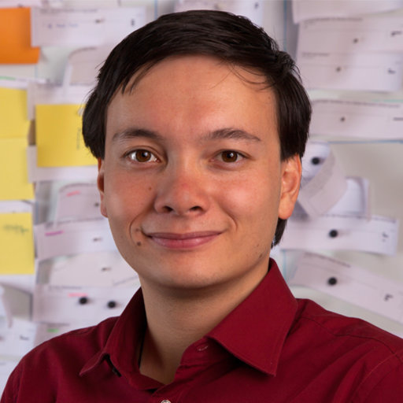

Meet the organizers



Chemnitz University of Technology
Generative AI (GenAI) is transforming academia and industry, reshaping how users interact with digital systems. While tools such as ChatGPT and Stable Diffusion enable new interaction paradigms, they also introduce ethical challenges such as bias, algorithmic opacity, deskilling, and digital homogeneity. As Human-Computer Interaction (HCI) researchers and practitioners integrate GenAI into user interfaces, we must critically examine whether these technologies empower users or diminish agency by automating cognitive and creative processes. The second edition of the GenAI workshop fosters a critical dialogue on the role of GenAI in interactive systems, particularly concerning user autonomy, skill development, and equitable access. Simultaneously, the workshop explores new use cases for interactive systems. Participants will investigate the impact of GenAI through position papers, research statements, and discussions, synthesizing experiences and strategies from academics and practitioners. The workshop shows responsible and transparent AI integration in HCI design and practice by addressing the possibilities and limitations of GenAI.
We invite contributions from the HCI community, including researchers, interaction designers, visual artists, software engineers, and product developers, to share their experiences and insights on leveraging the potential of GenAI. Participants are encouraged to submit a position paper, which, upon acceptance, will be published on the workshop website and included in the Practical Insights Report. GenAI is reshaping how we conduct HCI research, introducing new methodologies, workflows, and interaction paradigms. This workshop provides a forum to exchange experiences, discuss arising best practices, and collaboratively define procedures for integrating AI-based tools into research and interactive systems.
You can submit your paper to https://www.conftool.pro/muc2025. At least one author of each accepted submission must attend the workshop. All participants must register for the workshop and at least one conference day. Submissions should follow the ACM two-column format and be a maximum of three pages (excluding references). At least one author of each accepted paper must attend the workshop and register for the conference. Accepted submissions will be published in the GI Digital Library.
9:00 – 9:15
9:15 – 10:00
10:00-10:30
10:30-12:00
12:00-13:00
13:00 – 14:30
14:30-15:00
15:00-17:00
17:00-17:30
17:30
AI writing assistants powered by large language models (LLMs) are increasingly used to support people’s writing. While they can enhance productivity, their potential side effects remain poorly understood. In this talk, I examine the risk that AI writing assistants may shape users’ opinions as they support their thinking and writing processes. I present a series of experiments in which participants interacted with an AI assistant that provided biased autocomplete suggestions on political topics. The results show that participants’ attitudes in post-task surveys shifted towards the AI’s suggested positions. I discuss possible mechanisms behind this subtle form of influence and reflect on its broader societal implications.
Maurice Jakesch is an Assistant Professor at Bauhaus University Weimar, where he leads the Computational Social Science Lab. His research examines the societal impact of AI through experiments, data analysis, and machine learning prototypes. Jakesch holds a Ph.D. in Information Science from Cornell University and has collaborated with Microsoft Research and Meta. His work has been supported by the German and U.S. National Science Foundations and has been presented to the U.S. Senate and the White House Advisory Council.